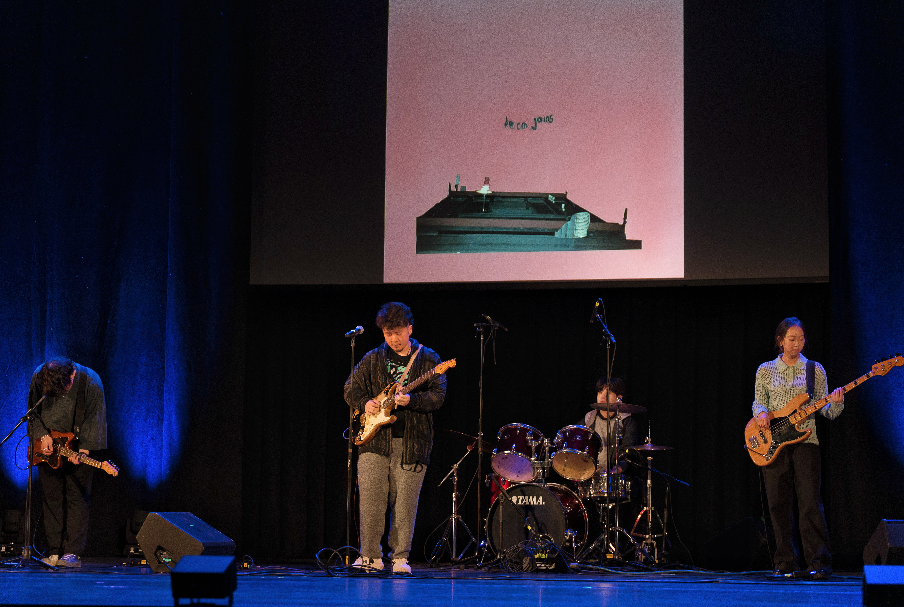

I blend research-led strategy with creative execution to help brands translate audience intelligence into campaigns, content and go-to-market motion that feel human, memorable and commercially grounded.
I build marketing and product direction from a blend of consumer research, business analytics and creative leadership. My work is rooted in people-first technology and innovation, turning complex audience insight into influence for teams and clients. I partner with firms to shape ideas that connect with culture while moving the business forward — from breakthrough content to thoughtful GTM recommendations, all anchored in clarity, collaboration, and measurable impact.
Traffic and content analysis for JPF, consumer regression modeling for Abbott, and performance planning across GA and SEM channels.
Open Letter newsletters and social campaigns for 10+ titles, paired with community growth strategy for Unitimes social.
Strategic pricing and GTM recommendations grounded in Abbott education research and market positioning work.
I have led an international music ensemble through 10+ performances, guiding collaborative creative projects that balance artistic vision with disciplined execution. This leadership experience reinforces thoughtful communication, cross-functional coordination and a grounded approach to delivering standout experiences.